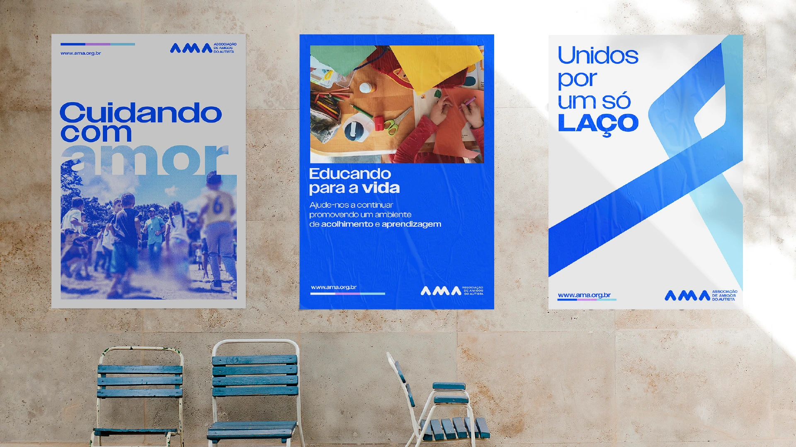
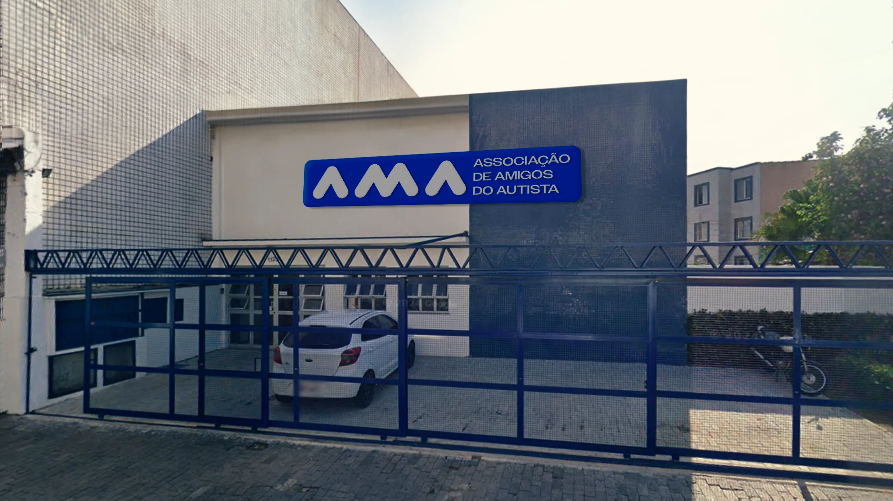
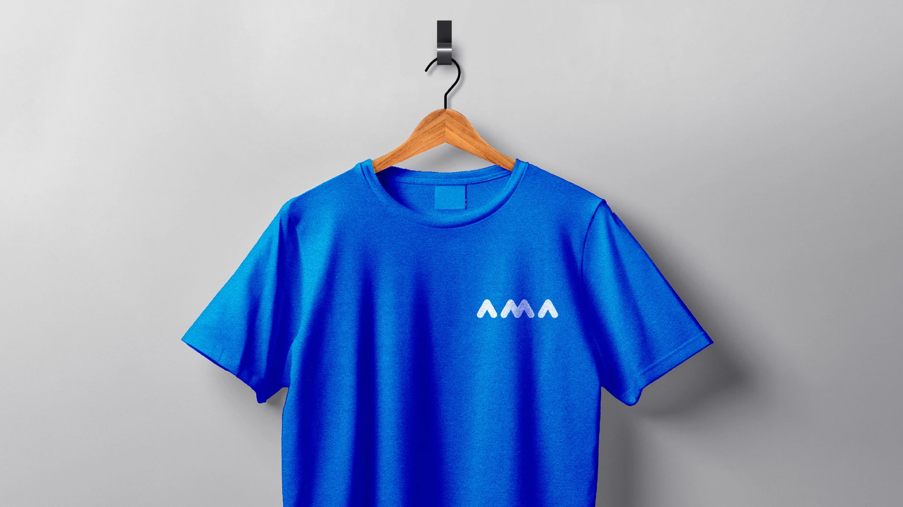
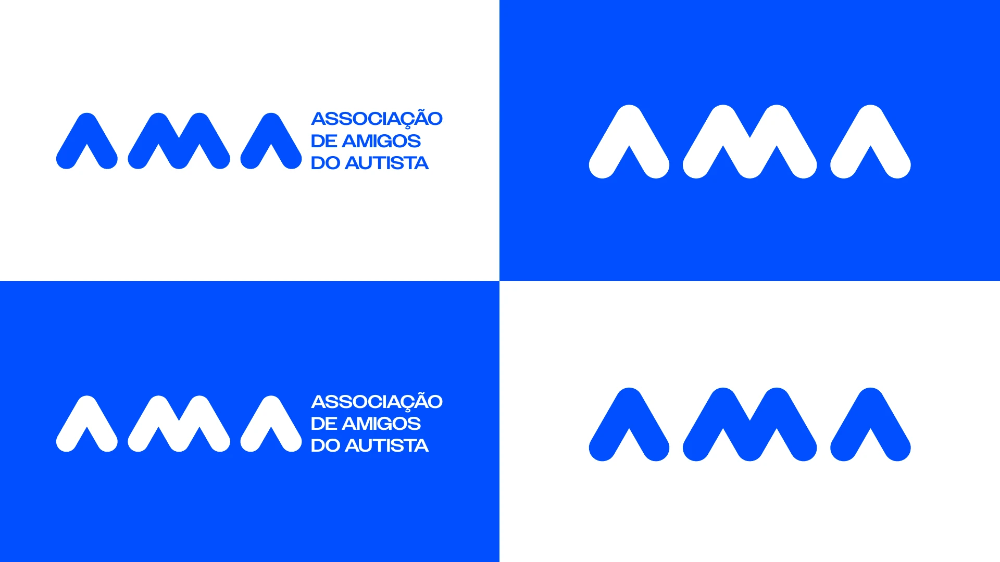

AMA

Como projeto acadêmico de rebranding, trabalhamos em parceria com a Associação de Amigos do Autista (AMA), uma organização com mais de 40 anos de atuação e um importante legado no cuidado e na inclusão de pessoas no espectro autista.
Ler mais sobre o projeto
Diante de uma marca com uma história tão consolidada, o desafio não era começar do zero, mas entender o que deveria permanecer. Em vez de substituir os valores construídos ao longo dos anos, buscamos traduzi-los para uma identidade mais contemporânea, capaz de dialogar tanto com quem já fazia parte da AMA quanto com novos públicos.
O projeto partiu de quatro pilares que representam a essência da organização: ética, respeito, lealdade e profissionalismo. A partir deles, desenvolvemos uma identidade que equilibra o sutil e o geométrico com elementos mais orgânicos e convidativos.
Mais do que atualizar a aparência da marca, a proposta foi criar uma identidade capaz de gerar pertencimento. Uma marca que despertasse orgulho em colaboradores, assistidos e parceiros, ao mesmo tempo em que apresentasse a AMA de forma mais sólida e relevante para o público corporativo.
O resultado é uma atualização que olha para o futuro sem abandonar suas raízes: uma identidade mais atual, mas ainda reconhecível em sua essência — preservando aquilo que tornou a AMA o que ela é.






